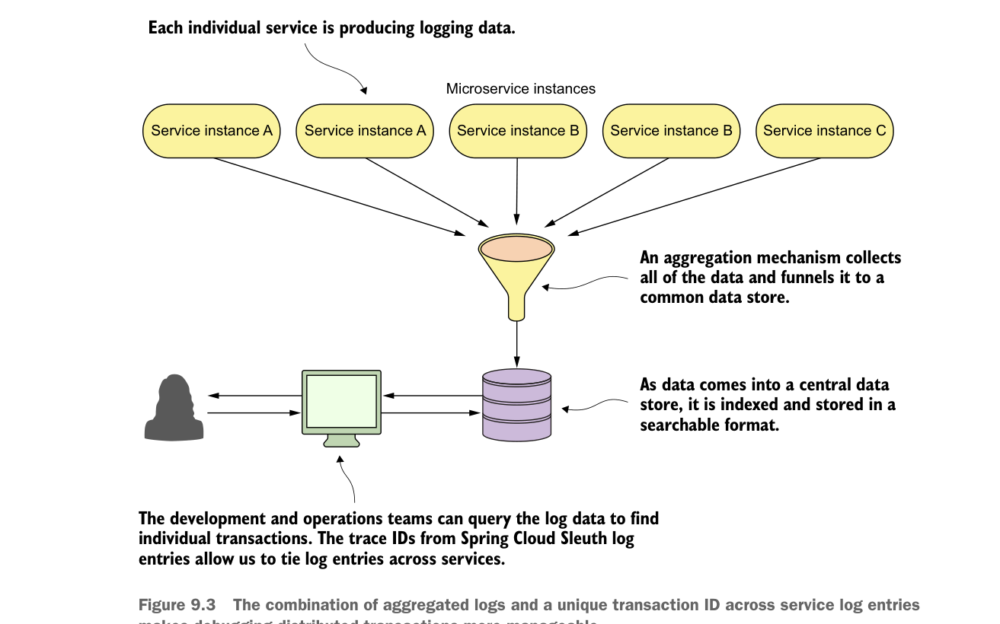

- Kéo dài thời gian khôi phục một tiến trình dịch vụ bị sập vì nhà phát triển cần sao lưu các nhật ký nằm trên máy chủ. Nếu một máy chủ lưu trữ dịch vụ bị sập hoàn toàn, các nhật ký thường bị mất.
Mỗi vấn đề được liệt kê đều là những vấn đề thực tế mà tôi đã gặp phải. Debug một vấn đề trên các máy chủ phân tán là công việc khó chịu và thường làm tăng đáng kể thời gian cần để xác định và xử lý sự cố.
Một cách tiếp cận tốt hơn nhiều là truyền theo thời gian thực tất cả nhật ký từ mọi instance dịch vụ của bạn đến một điểm tổng hợp tập trung, nơi dữ liệu nhật ký có thể được lập chỉ mục và tìm kiếm được. Hình 9.3 thể hiện ở mức khái niệm cách kiến trúc ghi nhật ký “thống nhất” này hoạt động.

Sự kết hợp giữa nhật ký được tổng hợp và một transaction ID duy nhất trên các mục nhật ký dịch vụ giúp việc debug các giao dịch phân tán dễ quản lý hơn.
May mắn là có nhiều sản phẩm mã nguồn mở và thương mại có thể giúp bạn triển khai kiến trúc ghi nhật ký đã mô tả trước đó. Ngoài ra, tồn tại nhiều mô hình triển khai cho phép bạn chọn giữa giải pháp on-premise do bạn quản lý cục bộ hoặc giải pháp trên nền cloud. Bảng 9.1 tóm tắt một số lựa chọn có sẵn cho hạ tầng ghi nhật ký.